There are certainly sheer number of benchmarking utilities available for PC, which put primary system components, including CPU, Main Memory, GPU etc., through a diverse range of tests to measure their health, ability and performance. The benchmarking apps are generally built to diagnose PC problems and check the actual ability of a component and its performance in presence of other installed system devices. For instance, a high-end GPU may not be able to perform at its peak ability with one or more incompatible system components. Similarly, main memory requires compatible motherboard and CPU to give its best performance. Unfortunately, there isn’t a simple way to benchmark all the system components, and therefore, one needs to manually check each component’s performance while using the installed OS.
If you’ve just bought a new/old PC and haven’t installed OS on your computer, you could use Ubuntu Live Disk to thoroughly benchmark PC hardware to check system performance without having to install Windows. For those who are not familiar with Ubuntu Live CD/Disk, it’s a simple testing platform that allows user to check quick demo of Ubuntu OS without changing the system. Ubuntu Live CD/Disk can be used to diagnose numerous system issues, run tools to fix complex problems like reset Windows admin password, hard wipe disk partitions, recover hard disk data and repair lost partitions, scan hard disk for potentially dangerous viruses etc.
Since Ubuntu open source software repository holds a multitude of system testing and benchmarking tools to test the stability of different system components, one can use it to conduct tests for measuring overall performance of the system and identifying compatibility issues of various installed system components.
To get started, you need a persistent Ubuntu Live Disk that allows installing additional utilities to run heavy benchmark tests. In our previous guide, we showed you how to create a persistent Ubuntu Live Disk. Just follow the steps to create one, and then plug it into system whose components are to be checked for performance. You need to change the boot order to run Ubuntu without installing it on hard disk. To do so, move to BIOS menu by pressing F2, F10, Del, F9 or other specified key at system startup. Now, move to Boot menu and set External hard disk/USB as first boot option. Now, save the changes made to BIOS menu and reboot the PC. It will take you directly to Ubuntu boot menu. Select Run Ubuntu from this USB option to load Ubuntu 10.10.
Using Memtest86+ To Test Memory
If you’ve created Ubuntu Live Disk (Ubuntu 10.10) using Universal USB Installer, you will find Test Memory option in Ubuntu Boot menu. This option runs Memtest86+ tool to thoroughly scan each sector of main memory for discrepancies, and immediately report the problems. It can also help you identify damaged/unusable memory modules and other like issues. MemTest86+ is an advanced diagnostic application to check that whether main memory faces any problems while reading or writing data or not. It puts main memory under stress by writing different patterns to all memory locations, and then read them back.
When you select the Test Memory option, it will immediately start testing the main memory by writing patterns. You will find L1, L2 and L3 cache memory details on left side, while main memory details are shown in main window. You can see total wall time, cached memory, reserved memory, memory map value, ECC, current test, Pass and Errors etc.
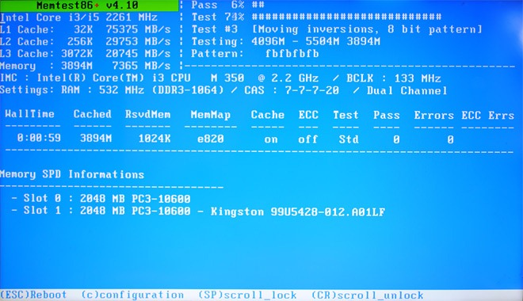
During testing, you can change the configuration by hitting ‘c’ on keyboard; it lets you skip current test, select test type to run, specify address range, enter into Error Report Mode, show DMI Memory info, choose ECC polling mode and more.
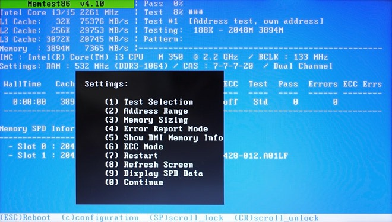
It must be noted that Memtest86+ runs indefinitely unless you manually stop the testing process by hitting ESC or C.
Getting Detailed System Information & Testing CPU Computational Strength
Ubuntu doesn’t come with an advanced utility to get information on installed system components including hard disk, CPU, Main Memory (RAM), Network, GPU, Available Ports, PCI slots and devices, Network Interfaces, Battery statistics, For this reason, you need an application called Hardinfo to display information about the installed hardware devices and operating system. To download and install it, enable community maintained open-source software repository option from Synaptic Manager, which can be accessed from System—>Preferences menu.
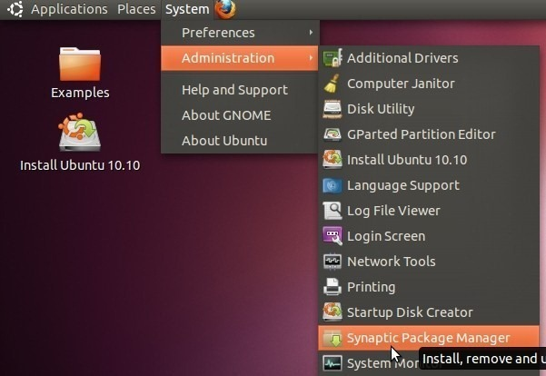
Now, open Settings menu and select Repositories.
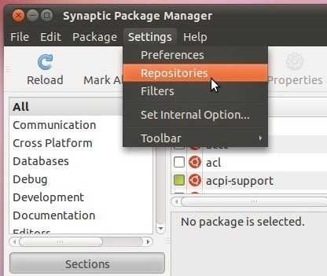
In Ubuntu Software tab, enable Community-maintained Open Source software option, and then click Close.
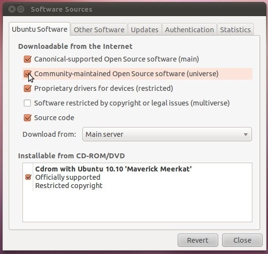
This requires updating the default package list; just click Reload on toolbar to start downloading open source software list.
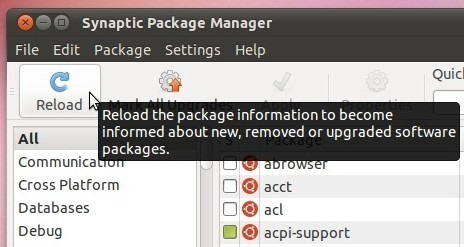
Once the list is refreshed, click All present underneath the Reload button, and enter hardinfo in search bar. It will show hardinfo tool in main window, letting you mark it for installation. Now, right-click it and select Mark for installation, and then hit Apply on toolbar to begin installation.
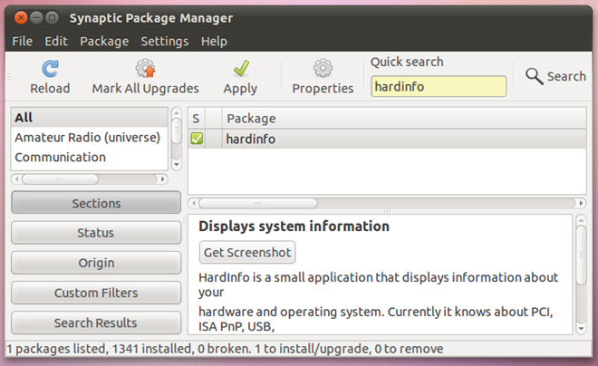
The Hardinfo tool can be accessed from Applications –> System Tools.
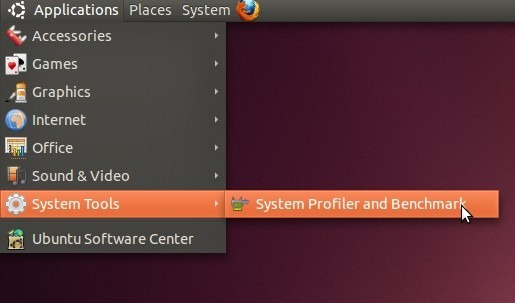
The application is designed to provide users with a detailed insight into system installed hardware. The left sidebar holds 4 categories including Computer, Devices, Network and Benchmarks. Under Computer section, you will find information on Boot, Filesystem, Display and Users, whereas Devices section provides details about Processor, Memory, USB Devices, Battery, Sensors, attached Storage devices, Input Devices and more.
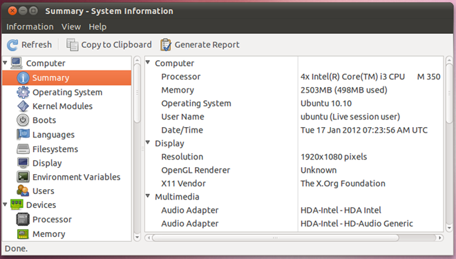
The Benchmark category includes a total of 6 CPU benchmarking tools including CPU Blowfish, CPU CryptoHash, CPU Fibonacci, CPU N-Queens, FPU FFT and FPU Raytracing. These tools basically help you test computational power of CPU by putting it through various tests. Clicking the test immediately starts it, and once the test finishes, it will show the results in main window.
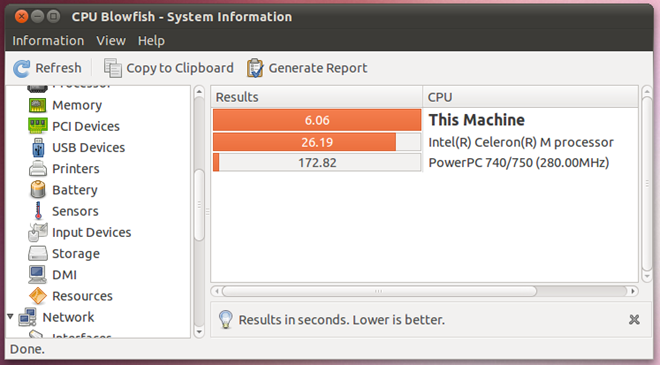
Checking CPU’s Ability To Withstand Extreme Stress
Although Hardinfo provides a handful of CPU benchmarking tools to test computational power, it doesn’t show how CPU will behave under extreme stress. Since resource-hog applications mainly use CPU to perform the required operation(s), you can put your CPU through stress test using cpuburn tool. It’s worth mentioning here the it puts your CPU under extreme stress and maximize heat production to check how your CPU behaves, and therefore, it’s recommended to use it for only 5-10 minutes. The application can be downloaded and installed from Synaptic Package Manager. Just enter cpuburn in search bar, right-click it in main window, and select Mark for installation. Once marked, hit Apply to install the application.
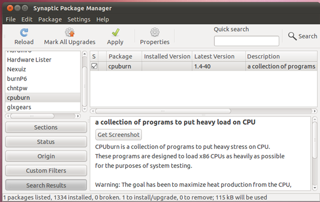
cpuburn packages numerous applications to test CPU performance under stress. It comes without any interface nor does it have a configuration console to tweak stress test settings. First off, open Terminal app from Applications –>Accessories menu.
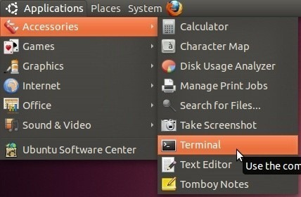
You can use burnP6 command to begin the CPU stress test. Just enter burnP6 and hit enter. It will begin putting stress on the CPU. You can use System Monitor app (accessible from System –> Administration) to check the CPU usage.
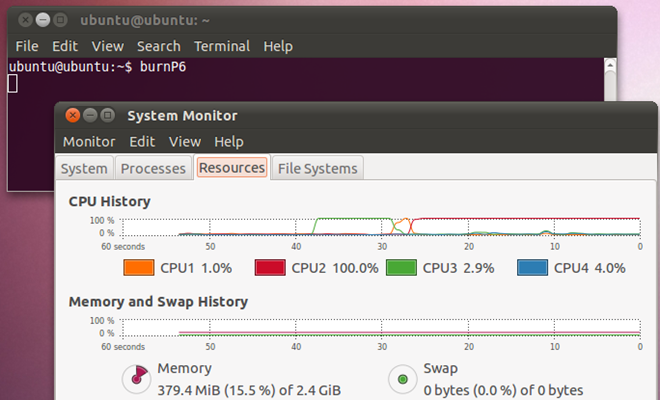
Benchmark GPU Performance / Perform FPS Test
In order to completely test each attribute of your GPU, you may need multiple GPU benchmarking utilities. Just like Windows and other OS platforms, Ubuntu supports various GPU performance test and benchmark applications to check its ability to render glass shadows, pixel shades, FPS for 3D objects and more. The widely known glxgears lets you run a 3D gears in a small window (300×300) to show number of frames that can be rendered in 5 seconds. It’s basically an OpenGL application that does nothing except reporting FPS numbers. It is packaged into Mesa Utilities that can be downloaded and installed from Synaptic Manager. Once open source repo list is added, enter mesa-utils in search bar, mark it for installation and hit Apply to download and install it on Ubuntu.
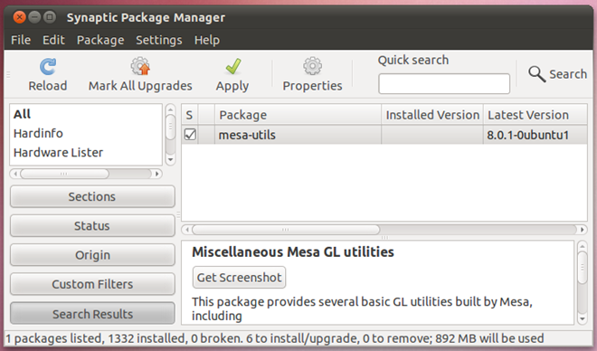
Once installed, open Terminal window, and enter glxgears command. It will start the test and provide you with current FPS info in real time. Closing the glxgears test window will show the final results in Terminals window. You can compare the results with glxgears official community
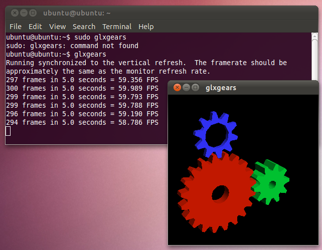
Since glxgears shows FPS for only a small window, and doesn’t really put your GPU through heavy 3D graphics tests, you can download Heaven benchmark utility to check if your GPU supports 3D games with extremely heavy graphics or not. It’s DirectX 11 GPU benchmarking tool that is based on Unigine engine. The application not only supports previous versions of DirectX including DirectX 10 and DirectX 11, but also OpenGL 4.0. You can watch Heaven benchmark test video below.
Testing All System Components With Phoronix Test Suite
Amongst the list of system benchmark applications, Phoronix is probably the most comprehensive and powerful testing and benchmarking plaform that supports more than 130 test profiles and 60 test suites. It provides users with one-stop solution to test numerous system components including Processor, Memory, GPU, Hard disk, Video Encoding and lot more. The application was primarily designed for automated Linux testing, and has the ability to perform both qualitative and quantitative benchmarks via an interactive menu. All you need is to download the DEB package, and install it using Ubuntu Software Center.
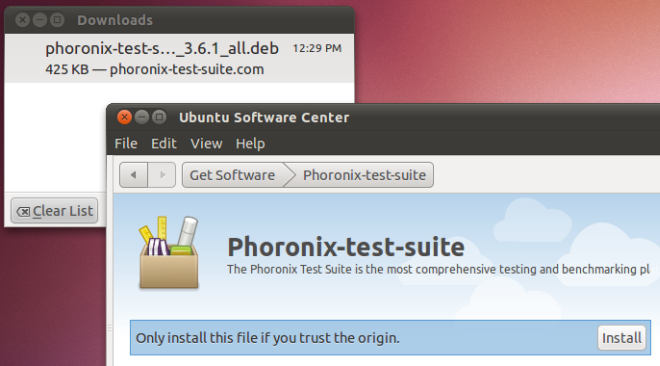
Once installed, select Phoronix Test Suite from Applications –> System Tools menu.
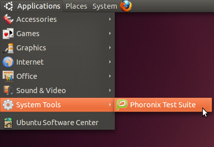
Upon click, it will launch the application in Terminal, showing the menu to run a test, run a whole suite by specifying multiple tests, perform complex system test, show system hardware / software info, display auto-detected system sensors and test run repetition.
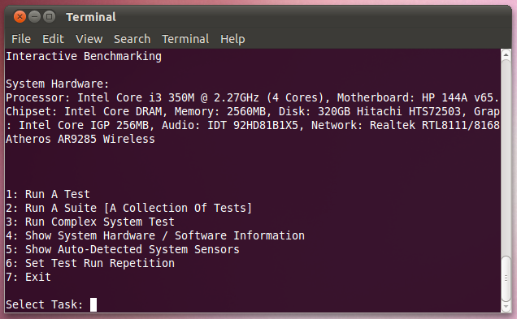
Just enter the number of test you want to perform, and it will start the test. It must be noted that it may prompt you to install additional components to perform the test. It will first list down all the missing testing modules, and then automatically start downloading them from its online repository.
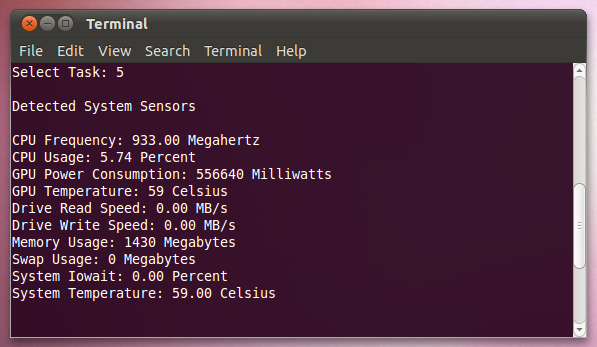
The Run A Suite option lets you select the tests you want to run in order to check the component’s performance. For instance, you may choose to run pts/gaming test to check if the system specifications meet the requirements of high-end games or not.
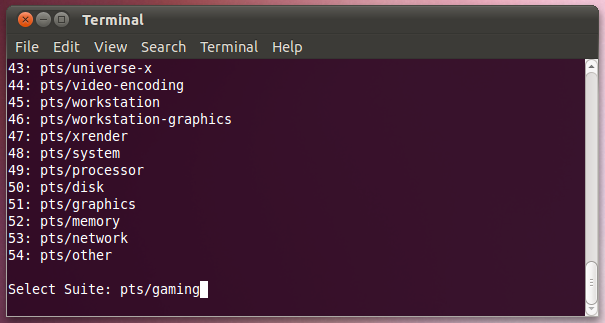
The Run Complex System Test option downloads additional packages, which are required to perform pts/apache. pts/c-ray, pts/ramspeed and pts/postmark tests. After downloading all the required components, it will start using each suite to test entire system. You can compare the results with openbenchmarking.org online community and get feedbacks on your system benchmark results.
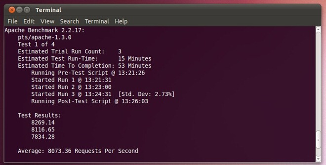
Running Disk Benchmark Test To Identify Read/Write Issues
Although Phoronix includes a range of components to test the hard disk read/write functions, it prompts you to install the additional modules that are required to conduct a hard disk test. Alternatively, you can choose to install Bonnie++ tool to thoroughly test all sectors for finding read and write issues. It’s a disk benchmarking suite that performs a number of tests to check read and write functions’ performance & speed, and latency rate. Just like other disk benchmark tools, it writes a file on disk volume and then read the file to find the issues. Moreover, it automatically deletes the files after performing the tests, and shows test results. To download and install the application, open Terminal window from Applications –> Accessories menu, and enter the following command.
sudo apt-get install bonnie++
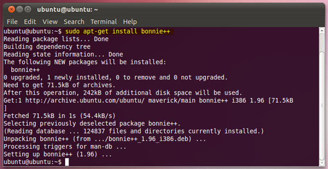
Once the application is installed, navigate to disk volume on which tests are to be performed, and enter bonnie++ to begin disk benchmark tests. The following screenshot shows the type of tests it perform to measure disk performance.
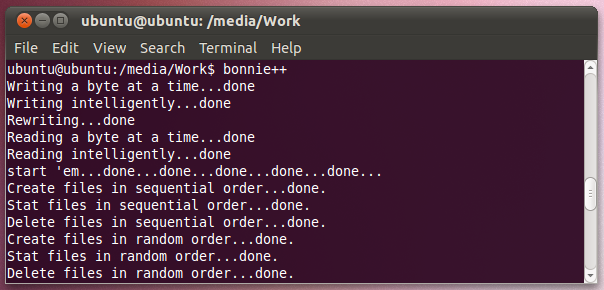
The application has been designed to test database type access to file(s), and check disk health by writing, reading and deleting small files. Once it’s performed all the tests, it will show the disk performance test results in Terminal window. You can check the time it took to write files on disk, read files, and then delete them from the disk. It also shows the average CPU time it took to perform the disk test operations.
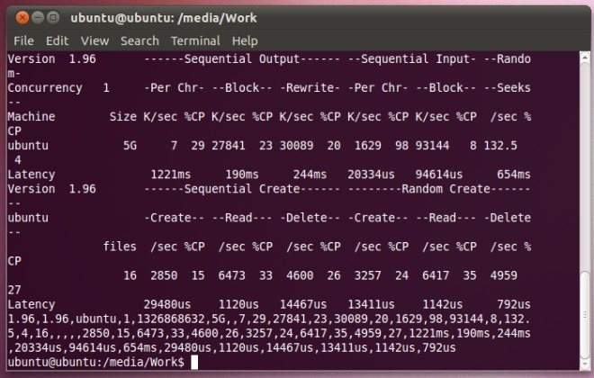
We hope that, after using aforementioned benchmarking utilities, you will be able to diagnose potential hardware issues. We have previously brought you a guide on creating a customizable system rescue disk via SARDU to fix a wide range of system issue, and you can make a customized bootable system rescue solution by following the mentioned steps in said post, and then use the required utilities.


{kind=link}
Glad you liked it. Would you like to share?
Sharing this page …
Thanks! Close
Add New Comment
Showing 2 comments